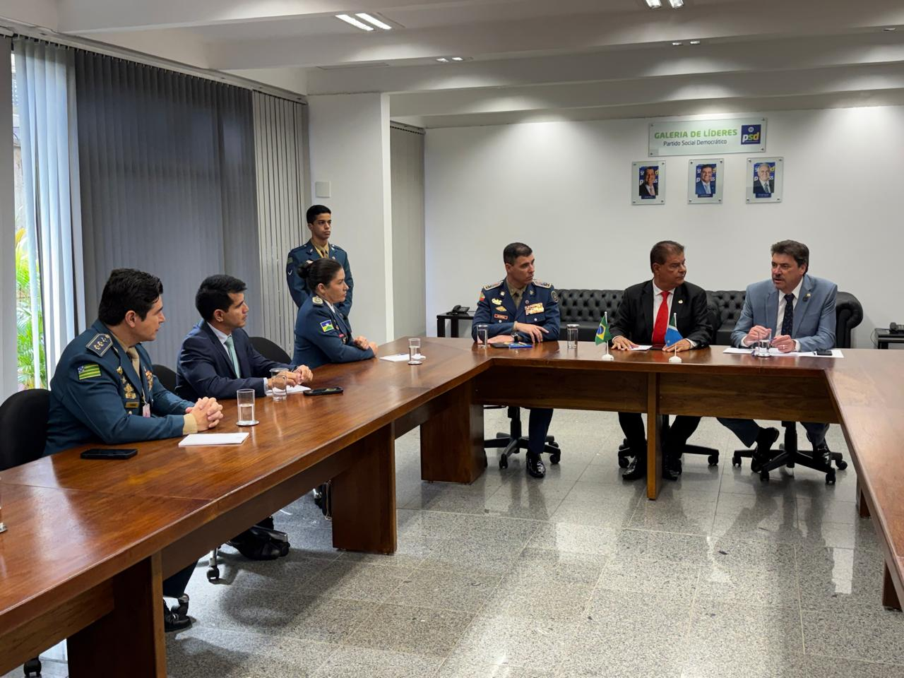
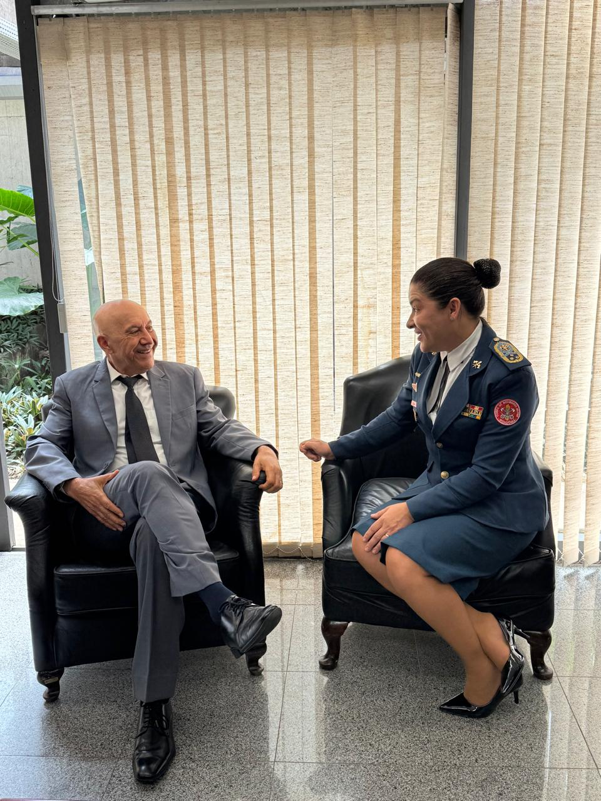
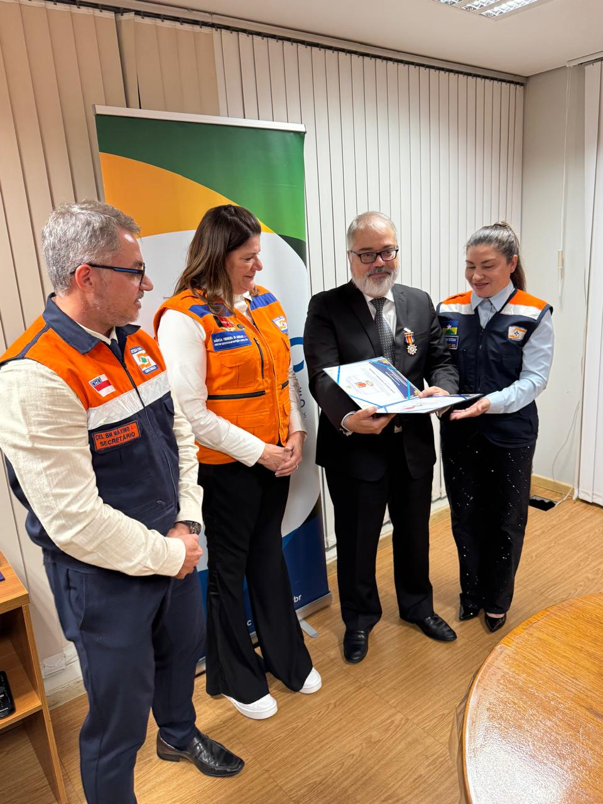
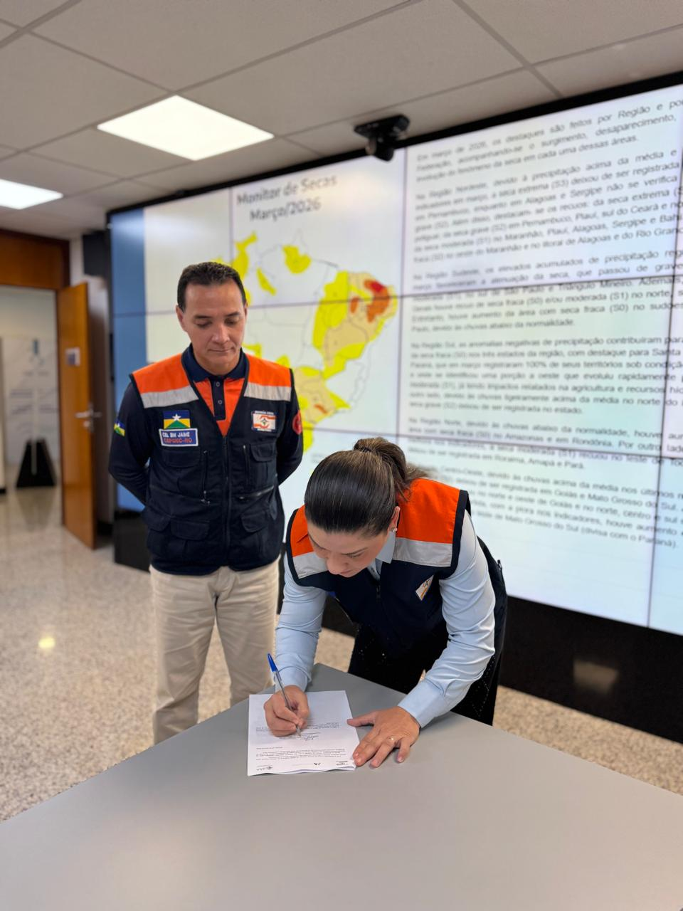
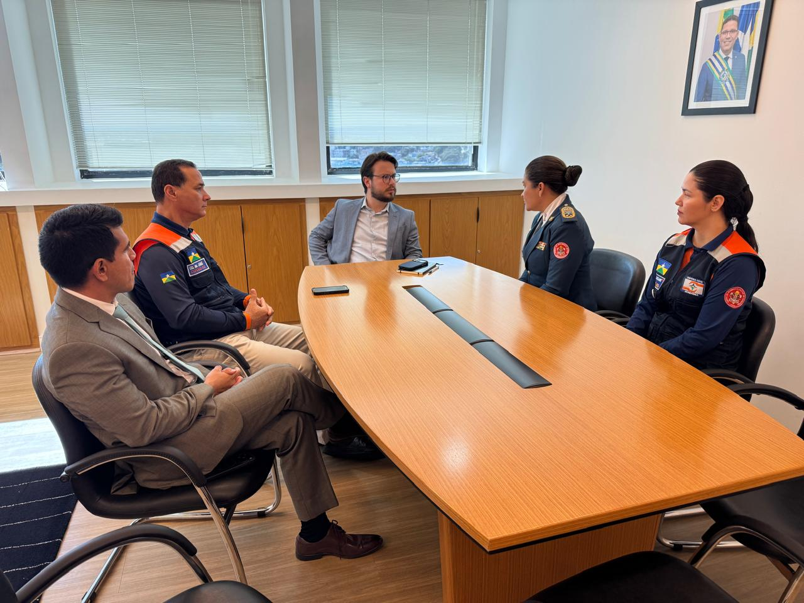

A Comandante-Geral do Corpo de Bombeiros Militar do Estado de Rondônia (CBMRO), Cel BM Daniele Cristina Lima Ferreira, realizou uma nova missão institucional em Brasília/DF, nos dias 29 e 30 de abril de 2026, atuando tanto no exercício de suas atribuições como Comandante-Geral quanto na qualidade de Coordenadora Estadual de Proteção e Defesa Civil. A agenda contemplou reuniões com parlamentares federais, órgãos da administração pública federal e entidades de cooperação internacional.
Atividades do Dia 29 de Abril
No período matutino, a Comandante-Geral, acompanhada por representantes do Conselho Nacional dos Corpos de Bombeiros Militares do Brasil (LIGABOM), participou de reunião com Senadores da República no Congresso Nacional. O objetivo do encontro foi pleitear a inclusão do Projeto de Lei Complementar (PLP) nº 18/2021 na pauta da Comissão de Assuntos Sociais (CAS). O referido projeto visa autorizar que os Serviços de Resgate Pré-Hospitalar dos Corpos de Bombeiros Militares de todos os Estados e do Distrito Federal sejam contemplados com emendas parlamentares individuais destinadas às Ações e Serviços Públicos de Saúde (ASPS).
No período vespertino, ocorreu uma audiência com o Senador Confúcio Moura. Durante a reunião, foi solicitado o apoio do parlamentar para a aprovação do PLP nº 18/2021. O Senador reconheceu a relevância da matéria e manifestou seu apoio formal à aprovação da propositura.
Ao final do dia, atuando na condição de Coordenadora Estadual de Proteção e Defesa Civil, a Comandante-Geral participou de agenda oficial na Agência Brasileira de Cooperação (ABC), juntamente com representantes do Conselho Nacional de Gestores de Proteção e Defesa Civil (CONGEPDEC). Na ocasião, procedeu-se à outorga de medalhas ao Senhor José Solla Vázquez Junior, Coordenador-Geral de Cooperação Humanitária da referida agência.
Atividades do Dia 30 de Abril
No período matutino, a Comandante-Geral, acompanhada por membros da equipe da Coordenadoria Estadual de Proteção e Defesa Civil de Rondônia, participou de reunião na Agência Nacional de Águas e Saneamento Básico (ANA). A comitiva foi recebida pelo Senhor Joaquim Guedes Correa Gondim Filho, Superintendente de Operações e Eventos Críticos, que realizou uma apresentação sobre o funcionamento da Sala de Situação da agência e sua sistemática de integração com os demais órgãos da esfera federal.
No período vespertino, foi realizada uma reunião com o Senhor Augusto Leonel, Secretário de Integração do Estado de Rondônia em Brasília (SIBRA). O encontro teve como propósito reiterar o compromisso do CBMRO em atuar de maneira sinérgica com os demais órgãos do Governo Estadual. Ademais, destacou-se o interesse da Corporação em realizar visitas a embaixadas com o fito de captar recursos alternativos, sendo solicitado o apoio institucional da SIBRA para a viabilização de agendas e a respectiva interlocução com os representantes diplomáticos.
Resultados e Conclusão
As agendas cumpridas em Brasília/DF demonstraram-se profícuas para o fortalecimento institucional do Corpo de Bombeiros Militar do Estado de Rondônia e da Coordenadoria Estadual de Proteção e Defesa Civil. As articulações realizadas junto ao Poder Legislativo Federal e aos órgãos da Administração Pública Federal e Estadual reforçam o compromisso da Corporação com a busca contínua por melhorias nos serviços prestados à sociedade rondoniense, especialmente no que tange ao resgate pré-hospitalar e às ações de proteção e defesa civil.
Órgãos e Entidades Envolvidos
Galeria de Fotos
Confira os momentos das reuniões realizadas:





Sobre o CBMRO
O Corpo de Bombeiros Militar de Rondônia (CBMRO) é uma instituição de Segurança Pública e Defesa Civil responsável pela prevenção e combate a incêndios, resgate de pessoas, proteção ambiental e resposta a desastres no estado de Rondônia. Com uma história de dedicação e profissionalismo, o CBMRO segue comprometido com a preservação de vidas e a proteção da população.